１７－１ 病名登録
（１） 「病名」ボタンをクリックします
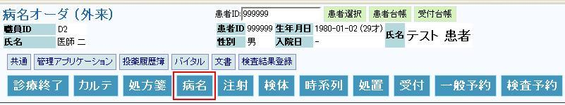
（２） 病名オーダ画面が表示されます
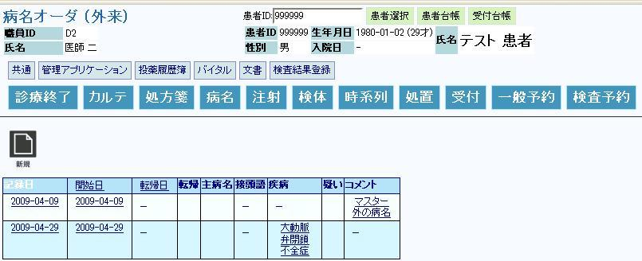
１７－２ 病名 新規登録
（１） 新規ボタンをクリックします
（２） ① ｢転記｣は治癒、死亡、中止のいずれかをコンボボックスから選択します
（３） ②本病名が主たる病名の場合は、○をコンボボックスから選択します
（４） ③接頭語は術後、両、右、右側、慢性、左側、左、その他のいずれかを
コンボボックスから選択します
※「修飾語(接頭語)」+「病名」+「修飾語(接尾語) 」の各構成要素を登録する
（５） ④疑い病名の場合は、○をコンボボックスから選択します
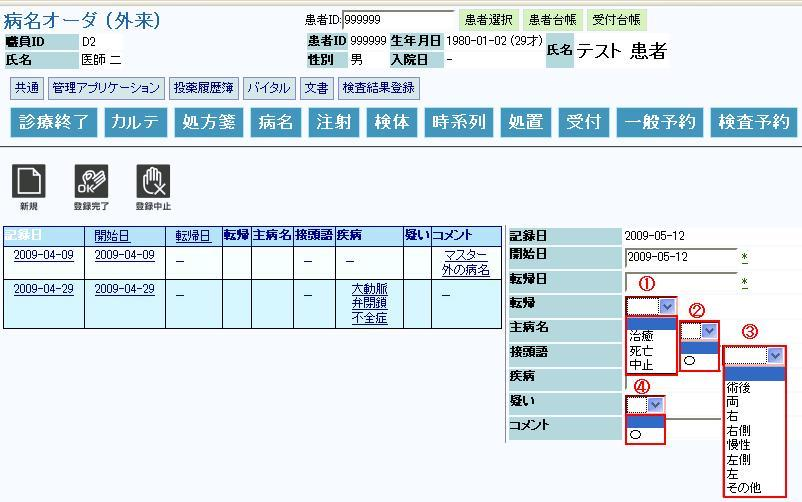
（６） 疾病（病名）の検索方法
①疾病をクリックし、病名をコンボボックスから選択します
②該当する病名がなければ、「その他」をコンボボックスから選択します
③右下画面に「疾病を変更」が表示されます
④検索条件、病名表記又は、カナ又は、ICD10のいずれかを入力し
検索アイコンをクリックします。
検索条件に該当する病名が表示されます。
※ 検索条件をクリアする場合は検索条件クリアアイコン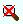をクリックして下さい
※ 選択を終了する場合は検索解除アイコン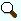をクリックして下さい
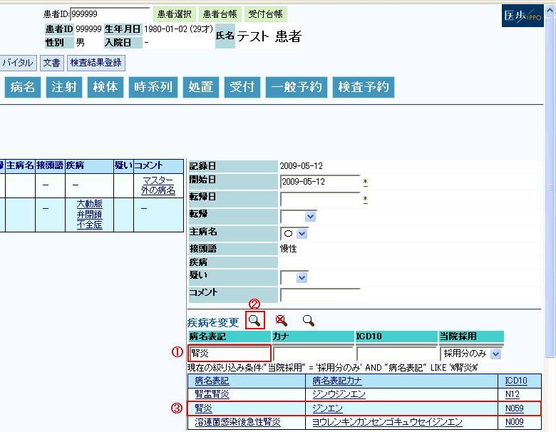
（７） 疾病（病名）の検索結果
（８） 疾病（病名）の登録又は、中止
①登録を完了する場合は、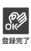登録完了アイコンをクリックしてください
②登録を中止する場合は、登録中止アイコンをクリックしてください
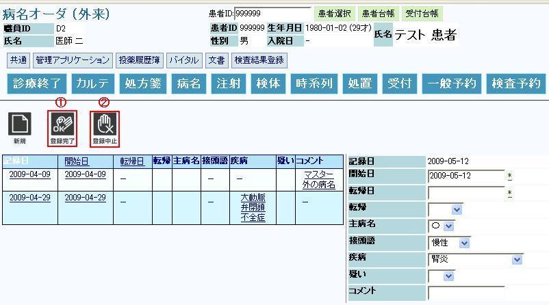
（９） 疾病（病名）の登録完了
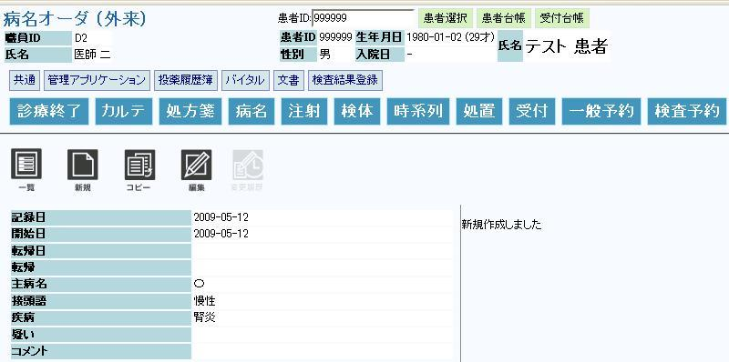
１７－３ 病名 修正
（１） 編集ボタンをクリックします
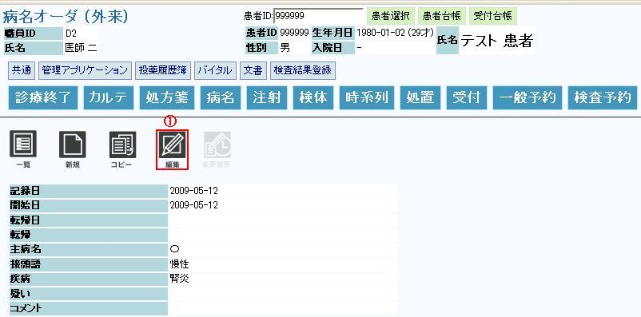
（２） 右画面に、記録日、開始日、転記日、転記、主病名、接頭語、疾病、疑い、コメントが
表示されます
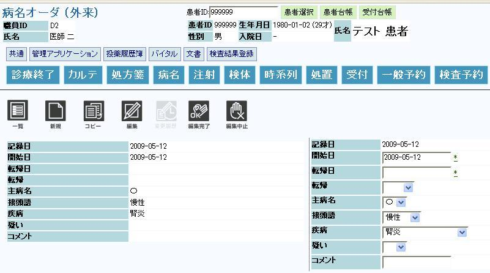
（３） 例として、コメントを入力します
（４） 登録完了アイコンをクリックしてください
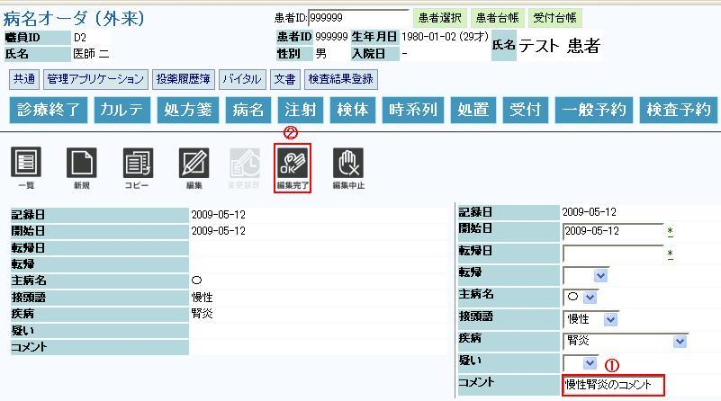
（５） 病名内容が修正されました

１７－４ 病名 コピーして新規
（１） 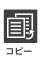コピーボタンをクリックします
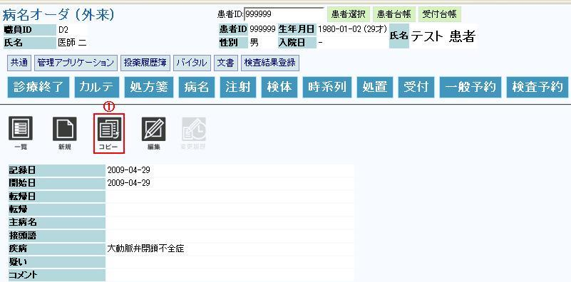
（２） 新規登録と同じ操作手順です。例えば、本病名を①主たる病名にします
（３） 登録完了アイコンをクリックしてください
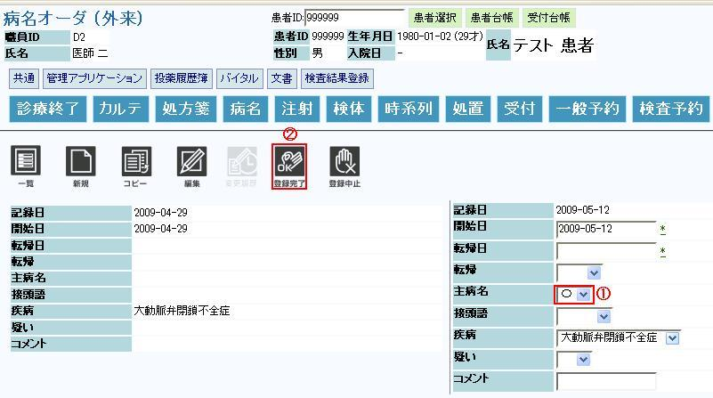
（４） 疾病（病名）のコピーして登録完了
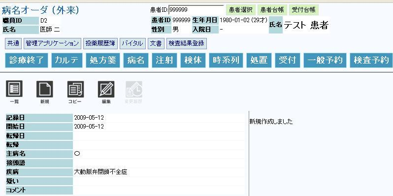